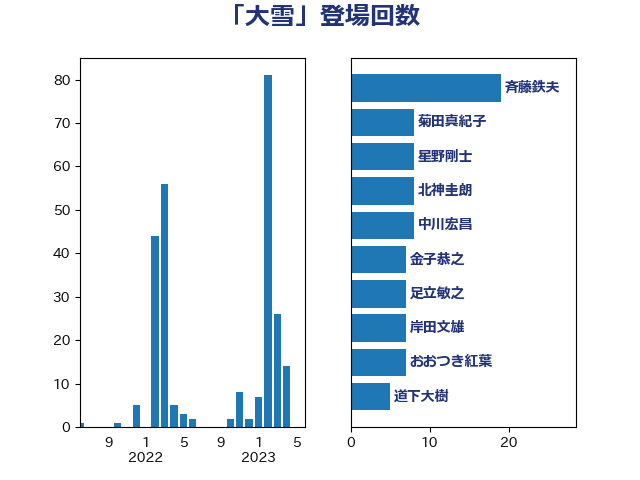

単語「大雪」

| 斉藤鉄夫 | 公明党 | 19 回 |
| 菊田真紀子 | 立憲民主党 | 8 回 |
| 星野剛士 | 自由民主党 | 8 回 |
| 北神圭朗 | 無所属 | 8 回 |
| 中川宏昌 | 公明党 | 8 回 |
| 金子恭之 | 自由民主党 | 7 回 |
| 足立敏之 | 自由民主党 | 7 回 |
| 岸田文雄 | 自由民主党 | 7 回 |
| おおつき紅葉 | 立憲民主党 | 7 回 |
| 道下大樹 | 立憲民主党 | 5 回 |
| 松本剛明 | 自由民主党 | 5 回 |
| 空本誠喜 | 日本維新の会 | 4 回 |
| 石原正敬 | 自由民主党 | 4 回 |
| 滝波宏文 | 自由民主党 | 4 回 |
| 森屋隆 | 立憲民主党 | 3 回 |
| 根本幸典 | 自由民主党 | 3 回 |
| 小林一大 | 自由民主党 | 3 回 |
| 中川康洋 | 公明党 | 3 回 |
| 高橋千鶴子 | 日本共産党 | 2 回 |
| 野田国義 | 立憲民主党 | 2 回 |
| 野上浩太郎 | 自由民主党 | 2 回 |
| 谷公一 | 自由民主党 | 2 回 |
| 西村康稔 | 自由民主党 | 2 回 |
| 熊谷裕人 | 立憲民主党 | 2 回 |
| 津島淳 | 自由民主党 | 2 回 |
| 岩渕友 | 日本共産党 | 2 回 |
| 岩本剛人 | 自由民主党 | 2 回 |
| 吉井章 | 自由民主党 | 2 回 |
| 井林辰憲 | 自由民主党 | 2 回 |
| 馬場雄基 | 立憲民主党 | 1 回 |
| 阿部知子 | 立憲民主党 | 1 回 |
| 谷田川元 | 立憲民主党 | 1 回 |
| 若松謙維 | 公明党 | 1 回 |
| 芳賀道也 | 国民民主党 | 1 回 |
| 笠井亮 | 日本共産党 | 1 回 |
| 秋本真利 | 自由民主党 | 1 回 |
| 石川香織 | 立憲民主党 | 1 回 |
| 石井浩郎 | 自由民主党 | 1 回 |
| 石井正弘 | 自由民主党 | 1 回 |
| 石井啓一 | 公明党 | 1 回 |
| 田村貴昭 | 日本共産党 | 1 回 |
| 渡辺猛之 | 自由民主党 | 1 回 |
| 沢田良 | 日本維新の会 | 1 回 |
| 永井学 | 自由民主党 | 1 回 |
| 梅谷守 | 立憲民主党 | 1 回 |
| 柴田巧 | 日本維新の会 | 1 回 |
| 枝野幸男 | 立憲民主党 | 1 回 |
| 東国幹 | 自由民主党 | 1 回 |
| 朝日健太郎 | 自由民主党 | 1 回 |
| 後藤茂之 | 自由民主党 | 1 回 |
| 後藤祐一 | 立憲民主党 | 1 回 |
| 岩田和親 | 自由民主党 | 1 回 |
| 小里泰弘 | 自由民主党 | 1 回 |
| 太田房江 | 自由民主党 | 1 回 |
| 大西健介 | 立憲民主党 | 1 回 |
| 大河原まさこ | 立憲民主党 | 1 回 |
| 大島敦 | 立憲民主党 | 1 回 |
| 堀場幸子 | 日本維新の会 | 1 回 |
| 原口一博 | 立憲民主党 | 1 回 |
| 加藤鮎子 | 自由民主党 | 1 回 |
| 加藤勝信 | 自由民主党 | 1 回 |
| 住吉寛紀 | 日本維新の会 | 1 回 |
| 一谷勇一郎 | 日本維新の会 | 1 回 |